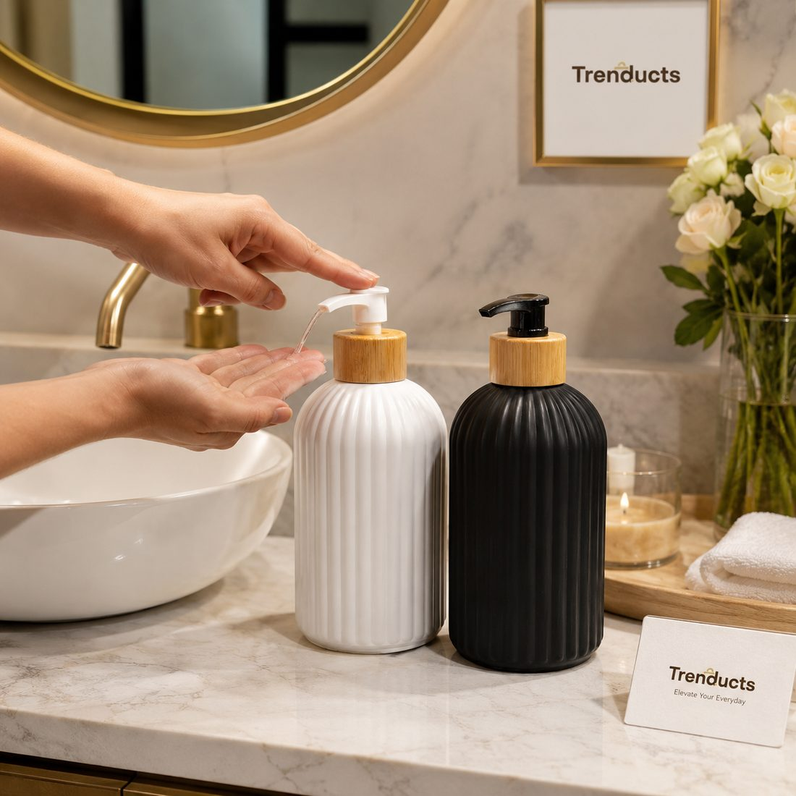
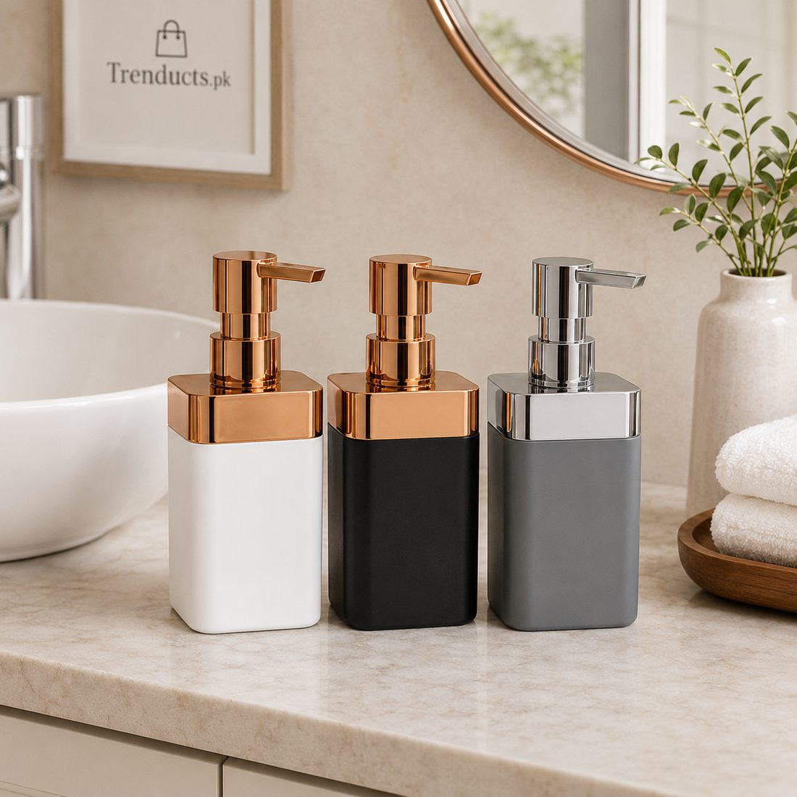
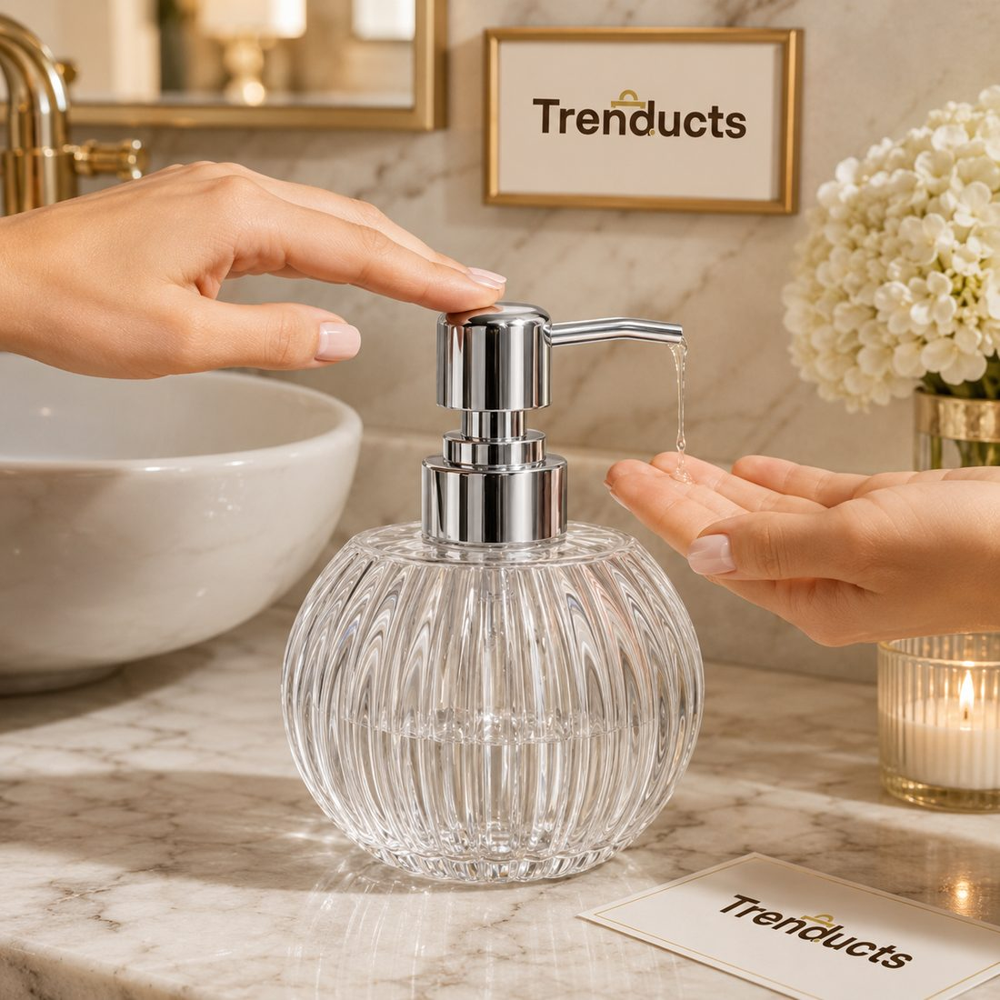

Handwashing in the kitchen is the first defence against food-borne illness. Here is how to set up a hygienic sink station with refillable soap pumps in Pakistani homes.



Stomach infections, typhoid and food poisoning are common in Pakistan, especially in summer and during the monsoon. Doctors repeat the same advice year after year: wash your hands with soap before cooking, before eating and after handling raw meat. Yet in many kitchens, the sink has an old bar of soap sitting in a puddle, or a dishwashing liquid bottle doing double duty as hand wash.
A hygienic sink station is simple to set up, and refillable soap pumps make a surprisingly big difference. This guide explains why and how.
Raw chicken, meat and unwashed vegetables carry bacteria such as salmonella and E. coli. When we touch them and then touch other food, utensils or our face, these bacteria spread. Washing hands with soap for twenty seconds removes most of them. In Pakistani homes, where food is often eaten with hands, handwashing before meals is even more important.
Bar soap is fine in the bathroom, but in the kitchen it sits in water, gets slimy and collects food particles. Shared bars can harbour germs on their surface. They also melt quickly and create mess. A pump dispenser delivers clean soap every time without anyone touching the soap itself.
A good kitchen soap dispenser should be:
Some families use two matching dispensers side by side, one for hand wash and one for dish soap, labelled clearly. You can find many refillable designs in these soap and liquid dispensers, suitable for kitchens and bathrooms alike.
Arrange the sink area for easy hygiene. Place the hand soap dispenser on the side closest to where people approach. Keep a separate hand towel, not the dish cloth, hanging nearby, and change it daily. A small tray under the dispensers catches drips and keeps the counter clean. Keep the sponge in a draining holder away from the hand soap.
Never top up a dispenser that still has old soap at the bottom, because bacteria can grow in the residue. When it is empty, wash the dispenser and pump with warm water, let it dry and then refill. Do this every few refills or once a month. Buy hand wash in larger refill packs, which is cheaper and creates less plastic waste.
Children copy what they see. Make handwashing a family rule before meals and after coming home from school or play. Teach them to wet hands, apply soap from the pump, scrub palms, backs, between fingers and under nails for twenty seconds, then rinse and dry. A step stool helps younger children reach the sink.
Handwashing works best alongside other habits. Use separate cutting boards for raw meat and vegetables. Wash fruits and vegetables thoroughly. Keep raw meat covered on the bottom shelf of the fridge. Clean counters after preparing meat. Replace sponges every two to three weeks.
Cases of diarrhoea and gastro rise sharply in Pakistan during hot and rainy months. Flies multiply, water supply can get contaminated, and food spoils faster. In these months, be extra careful: wash hands before every meal and after every trip to the market, use boiled or filtered water for drinking, and keep the sink area dry. A soap pump within easy reach makes these habits much more likely to stick.
A clean sink station with a refillable soap pump is one of the simplest health upgrades for any Pakistani kitchen. It makes handwashing easy, keeps soap clean and sets a good example for children. Combined with basic kitchen hygiene, it helps protect your family from illness through every season.